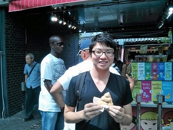

|  | Min Cheol Kim |
Hi there!
I'm studying Electrical Engineering at Stanford, and hope to join an MD-PhD program one day. If you have similar interests in healthcare, data science, medical devices, quantitative biology, or life, let me know and maybe we can be friends!
My research interests are signal processing and ML in the context of computational biology.
What am I holding in that photo?!
M.S., Electrical Engineering, Stanford University, 2017 – Present
B.S., Electrical Engineering, Stanford University, 2013 – Present
Thomas Jefferson High School for Science and Technology, 2009 – 2013
President's Award for Academic Excellence in the Freshman Year, 2014
USA Biology Olympiad Finalist, 2011/2012
Min Cheol Kim, Christian Choe, “Protein Dynamics Reconstruction from Unordered Images", Independent work (under supervision of Dr. TJ Lane at the SLAC National Laboratory and Professor Gordon Wetzstein), 2016. (pdf)(poster)
Min Cheol Kim, Christian Choe, “Bayesian Approach to Generating and Validating Cancer Mutation Trees", Independent work, 2016. (poster)
Leanna Owen, Arjun Adhikari, Mohak Patel, Min Cheol Kim, Natascha Leinjse, Alex Dunn, “Cytoskeletal and Adhesion Dynamics are Coupled to Matrix Deformation in 3D Cell Migration”, Biophysical Journal Conference, 2016. (Abstract)
Leanna Owen, Arjun Adhikari, Min Cheol Kim, Natascha Leinjse, Alex Dunn, “Actomyosin Dynamics in 3D Traction Force Generation”, Biophysical Journal Conference, 2015. (Abstract)
Min Cheol Kim, Russ Islam, Steven Lee, “Generalized Reconstruction of Visual Stimuli from fMRI Data", Independent work, 2014. (pdf)(slides)
Min Cheol Kim, Anya Kim, “Incorporating Rule-based Engines in Event Correlation for Cyber Attacks", Internal report, 2013. (pdf)
Min Cheol Kim, Anya Kim, “Determining Host Connectivity in for Event Prioritization", Internal report, 2012. (pdf)
Data Scientist at Komodo Health, 2017 - Present
Data Engineering Intern at Medtronic, Cardiac & Vascular Group, 2016 Summer
Software Engineering Intern at ZONARE Medical Systems, Software/Hardware Group, 2015 - 2016
Software Engineering Intern at Medtronic, Cardiac & Vascular Group, 2015 Summer
Research Intern at Naval Research Laboratory, Center for High Assurance Computer Systems, 2013 Summer
Research Intern at Naval Research Laboratory, Center for High Assurance Computer Systems, 2012 Summer
Co-Founder at Prelevin Therapeutics (super early stage biotech "startup"), backed by the Stanford ChEM-H, Sept 2016 - Feb 2016. We folded due to logistics issues, but good experience.
SIMS (Stanford Immersion in Medicine Program) Coordinator at Stanford Undergrad Advising and Research, 2015 - Present
Volunteer at Lucile Packard Children's Hospital, 2016 - Present
IT Assitant at Cardinal Free Clinics, 2015-2016
I used to shoot arrows with Stanford Archery (equipment director), 2013 - 2015
and organize events with Stanford Pre-Med APAMSA (secretary), 2014 - 2015